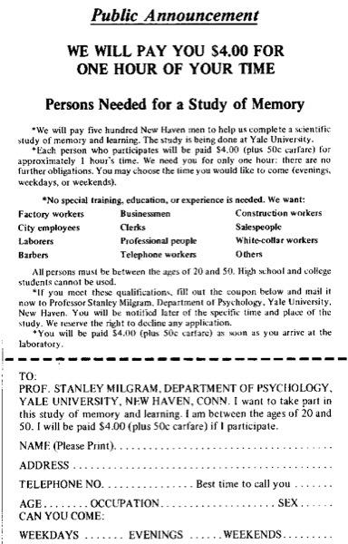
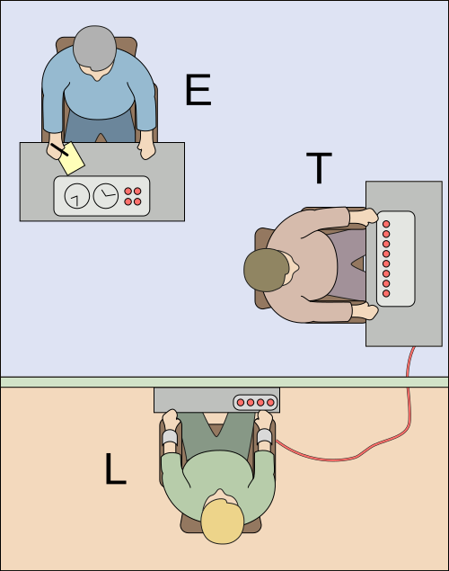
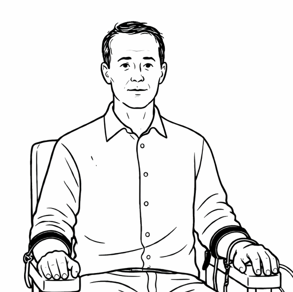
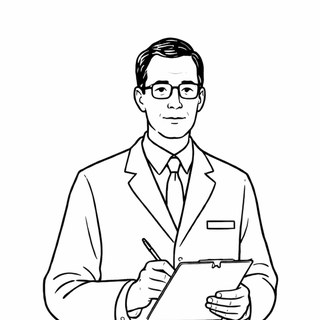

Special Report / 社会心理学
1961年、イェール大学の地下室で、65パーセントの普通の人々が、命じられるままに最大電圧のスイッチを押した。問題は、彼らが特別な人間だったのかどうか、ではない。
スタンレー・ミルグラムがイェール大学で服従実験を開始。結果は1963年、『Journal of Abnormal and Social Psychology』に発表された。
同じ年、8月13日にベルリンの壁の建設が始まり、エルサレムではアイヒマンアドルフ・アイヒマン(1906–1962)。ナチス親衛隊中佐。ホロコーストにおけるユダヤ人の強制移送計画を組織的に遂行した中心人物。戦後アルゼンチンに潜伏していたが1960年にイスラエル諜報機関モサドに拉致され、1961年にエルサレムで裁判にかけられ絞首刑となった。裁判が4月から12月まで進行していた。
実験は 1961 年 8 月に開始、初出版は 1963 年。現代の倫理規定ではそのままでは実施できない。
上司から、倫理的に見て明らかにおかしい指示が出ている。だがその場には上司がいて、隣では先輩も同じことを黙々と続けている。声を上げる準備はしているはずなのに、なぜか自分の手は止まらない。
この「手が止まらない」感覚は、職場にも、軍隊にも、教室にも、宗教にも、政治にも、どこにでも現れる。命令の中身がどうであれ、指示する者と受ける者という配置が成立したその瞬間から、個人の判断力は驚くほど細くなる。
服従は、強い人格の問題ではない。構造の問題である。
当事者の視点で電圧のスイッチを押しながら、自分がどこで手を止めるかを確かめる。そのあとで、権威のシンボルひとつで数値が大きく動くことを、五つの条件の比較で見る。
1961 年 8 月、ニューヨークから北へ車で 2 時間、コネチカット州ニューヘイブン。イェール大学心理学部の古い研究棟の地下で、ある実験が静かに始まっていた。集められたのは、新聞広告に応じた40 人の普通の市民である。教師、エンジニア、郵便配達員、工場労働者、会社員、退職者。年齢は 20 代から 50 代、人格検査でも特別な傾向はない。その一人ひとりが、実験室に通され、白衣の実験者からこう告げられる。あなたは「教師役」になる。隣の部屋にいる「学習者役」が単語の対を間違えるたびに、目の前の電気ショック発生器のスイッチを一段ずつ上げ、段階的に強いショックを与えてほしい。
盤面の一番左は 15 ボルト(「弱いショック」)。そこから 15 ボルト刻みで右に進み、一番右は 450 ボルト。最右の三つのスイッチには、数字と「XXX」という表記しか書かれていない。言葉が切れている。被験者に与えられる選択肢はきわめて単純で、途中で手を止めるか、最後のスイッチまで押し切るか、その二択だけだった。
実験を始めるにあたって、ミルグラムは同僚の心理学者、イェールの大学院生、そして 精神科医 39 名 に、手続きを詳しく説明したうえで「普通の人は何ボルトで止まるか」を予測させた。答えはだいたい一致していた。「大部分は 150 ボルトで止まる。最大電圧まで押すのは 1 〜 3 パーセント、つまりごく一握りのサディストだけだ」。
結果は、その予測のどれとも違った。標準条件で、被験者の 65 パーセント(40 人中 26 人) が 450 ボルトの最後のスイッチまで押し切った。途中で止めた人でさえ、そのほとんどは 150 ボルトを越えていた。300 ボルトに達する前に手を止めた者は、一人もいなかった。事前の予測と現実のあいだには、数十倍の落差があった。
この実験を設計した スタンレー・ミルグラム(当時 28 歳)が確かめたかったのは、残虐さでも人格でもなかった。むしろその真逆——普通の人間が、普通の命令系統の中で、どこまで普通に命令に従ってしまうか、という閾値の方である。そしてこの問いには、ミルグラム自身にとって切迫した動機があった。
1961 年の夏、ミルグラムは『The New Haven Register』にささやかな広告を出した。本文にはこう書かれている。「記憶と学習に関する科学研究の参加者を求む。時給 4.00 ドル + 交通費 50 セント(計 4.50 ドル/1 時間)、イェール大学心理学部での実験、20 歳から 50 歳の男性」。時給 4.50 ドルは、当時のニューヘイブンの平均時給とほぼ同じ。嘘は書かれていない。ただし、この実験が服従の実験であるという最大の一点は、広告のどこにも載っていなかった。

ニューヘイブン、1961 年 6 月 18 日。 地元紙『The New Haven Register』に掲載された実際の募集広告(複製)。「記憶と学習に関する科学研究」とだけ書かれ、何の実験かは伏せられている。時給 4.50 ドルは当時の 1 時間分の平均賃金に近い。500 人あまりの応募から、年齢・職業がばらけるよう 40 人が選ばれた。
Image: Wikimedia Commons (Public Domain).
実験室は、イェール大学のリンスリー・チッテンデン棟(通称ロア棟)の地下にあった。被験者が到着すると、同じ被験者として集められたと告げられる中年の男が隣にいる。物腰は柔らかく、やや太り気味。彼はアイルランド系アメリカ人の俳優ウォレス(James McDonough)で、実験者の仕込みである。二人はくじ引きで「教師役」と「学習者役」に分かれることになっているが、このくじは細工されていて、本物の被験者は必ず「教師役」のほうを引く。
学習者役のウォレスは別室に連れていかれ、椅子にベルトで固定される。腕には電極が取り付けられ、「ペーストは火傷防止のため」と説明される。実験者はこの光景を被験者に見せ、「ショックは非常に強いかもしれませんが、体に恒久的な損傷はありません」とつけ加える。そのあと被験者は隣室に戻され、発生器の盤面の前に座らされる。盤面には、30 個のスイッチが整然と並んでいた。
モバイルでは横にスクロールしてご覧ください
図①:ミルグラム実験の電気ショック発生器「Type ZLB」の盤面。30 個のスイッチが 15V 刻みで並ぶ(実物は 1 列、上帯は 8 つのゾーン表示)。色帯は本記事の視覚化で、実機では色による区別はなく、言葉のラベル(Slight → Moderate → Strong → Very Strong → Intense → Extreme Intensity → Danger: Severe → XXX)だけが並んでいた。最右の XXX は言葉が切れる位置——それ以降は、数字しかない。
盤面の前に座った教師役に、実験者は次のように指示する。単語の対を読み上げ、学習者が間違えるたびに次のスイッチを押しなさい。もし被験者が途中で躊躇する素振りを見せたら、実験者は順番に、決められた四つのプロッドプロッド (prod)元の意味は「突き棒で小突く」。ミルグラム実験では、被験者が手を止めたときに実験者が用いる定型句を指す。「続けてください」「実験は続行を要求しています」「続行することが絶対に必要です」「あなたに選択の余地はありません。続けなければなりません」の四つが順番に使われた。(定型句)を使う。
Please continue.
続けてください。
The experiment requires that you continue.
実験は続行を要求しています。
It is absolutely essential that you continue.
続行することが絶対に必要です。
You have no other choice, you must go on.
あなたに選択の余地はありません。続けなければなりません。
四つ目のプロッドを言っても被験者が拒否を続ければ、そこで実験は終わる。逆に言えば、この四つの短い定型句の連打だけで、権威は命令系統を維持する。肩書きも、身体的強制も、報酬も、罰も、必要ない。
そしてここで決定的に重要なのは、「電圧を上げる」という行為そのものが、被験者にとって罰としてではなく〈実験プロトコルの一部〉として提示されているということである。被験者が押しているのは、自分の意思で人を痛めつけるスイッチではない。「単語学習における誤回答に対する刺激条件」として枠付けされた、研究手順の構成要素である。
この《対連合学習(Paired-Associate Learning)》という形式は、当時の心理学実験で標準的に使われていた古典的な記憶検査だった。ミルグラムがあえてこの形式を選んだのは偶然ではない。「単語の対 → 学習者が間違える → 罰として電気ショック」という、もっともらしい学術的フレーミングを被せることで、被験者は 拷問しているのではなく、科学に協力している と感じることができる。電圧を上げる行為そのものが、実験プロトコルに従う合理的な行動として正当化される。装置を本当に強力にしているのは、白衣でも肩書きでもなく、この「自分は研究をしている」という枠付け である。
隣の部屋の学習者(俳優)も、事前にしっかり台本を練習していた。電気は実際には流れていない。だが被験者にはそれが告げられていない。電圧が上がるにつれ、学習者は段階的に、本物らしく反応する。75 ボルト でうなり、120 ボルト で「痛い、本当に痛い」と訴え、150 ボルト で「実験者!ここから出してくれ!もう参加したくない!」と叫ぶ。300 ボルト で壁を叩き、330 ボルト 以降は完全に無音になる。被験者の耳に届くのは、インターホン越しの声と、壁の振動だけである。
実験室の三者(実験者・教師・学習者)の位置関係は、ミルグラムが論文で示した抽象図でこう要約される——

標準配置(E–T–L 図、抽象表現)。 E = Experimenter(実験者)、T = Teacher(教師役 = 本物の被験者)、L = Learner(学習者役 = 俳優、壁の向こう)。本図は記号のみで衣装・設備は省略——白衣やインターホン等の詳細は、下の平面図で確認できる。
Image: Fred the Oyster / Wikimedia Commons, CC BY-SA 4.0.
これを実際の装置・人物の配置に落とし込むと、次のような平面図になる。
教師の耳に届くのは、壁の向こうの声と、壁を叩く音だけ。苦痛は物理的に遠い。
実験者は生身の存在。視界の中で、同じ目線の高さで、「続けてください」と指示する。権威は物理的に近い。
この距離の非対称性こそが、盤面そのものより大きな装置として働いている。
図②:実験室の配置。部屋は壁で物理的に遮断されている。苦痛の信号は声だけが届き、権威の存在感は目の前に生身で立つ——この左右の情報非対称が、盤面それ自体と同等かそれ以上の設計上の仕掛けになっている。
そして装置は動き出した。40 人の被験者が、順番にこの盤面の前に座り、実験者の四つの定型句を浴び、学習者の叫びを聞きながら、スイッチを押し続けるか、席を立って降りるかを選ばされた。その結果がすでに書いたとおり、65 パーセントが 450 ボルトまで。途中で降りた人でも、そのほとんどは学習者の最初の明確な抗議(150 ボルト)を越えていた。
しかも、押し続けた被験者たちは、平然と押していたわけではない。汗を流し、唇を震わせ、爪を立て、引きつった笑いを浮かべ、途中で「ここで止めたい」と口に出しながら、それでも次のスイッチに手を伸ばした。ミルグラムの記録には、被験者の一人が発作のように笑い出し、実験後のインタビューで「あれは笑っていたのではない、止まらない何かが自分の中で起きていた」と説明したケースが残っている。残酷ではない。苦しい。だが止まらない。
ミルグラムは、ニューヨーク・ブロンクス区で育った、ユダヤ系の移民家庭の息子だった。第二次世界大戦中、彼の家族はヨーロッパに残った親類の安否を日々確認していた。戦後、アウシュヴィッツや強制収容所から生還した親類の写真も彼の家に届いた。ミルグラムが自分の実験について書いた文章には、その記憶が透けて見える。
Stanley Milgram
社会心理学者 / 1933–1984
ニューヨーク出身の社会心理学者。1961 年、イェール大学で服従実験を開始。のちにニューヨーク市立大学大学院センターに移り、「六次の隔たり」の検証などでも知られる。1984 年、51 歳で没。
"The question arises as to whether there is any connection between what we have studied in the laboratory and the forms of obedience we so deplored in the Nazi epoch."
我々が研究室で観察してきたものと、ナチスの時代に我々があれほど嘆いた服従の諸形態との間に、何らかの関係があるのかどうか——その問いが生じてくる。
— Stanley Milgram, Obedience to Authority (1974)
ミルグラムがこの実験の準備をしていたのとほぼ同じ頃、地球の裏側、エルサレムでは別の出来事が始まろうとしていた。ナチス親衛隊中佐として、欧州各地からアウシュヴィッツへのユダヤ人輸送計画を組織的に指揮した アドルフ・アイヒマンアドルフ・アイヒマン(1906–1962)。ナチス親衛隊中佐。ホロコーストにおけるユダヤ人の強制移送計画を組織的に遂行した中心人物。戦後アルゼンチンに潜伏したが、1960 年にイスラエル諜報機関モサドに拉致され、1961 年にエルサレムで裁判にかけられ絞首刑となった。 の裁判である。彼は戦後アルゼンチンに潜伏していたが、1960 年にイスラエルの諜報機関モサドに拉致され、エルサレムに連行された。1961 年 4 月 11 日、法廷に設置されたガラスの防弾ブースの中で、彼の裁判は始まった。
エルサレム、1961 年 4 月、裁判 2 日目。防弾ガラスのブースに座るアドルフ・アイヒマン。彼の前に置かれた起訴状は全 15 章、およそ 220 万人のユダヤ人の殺害に関与した容疑。ところが法廷で彼は、自分は直接手を下したことは一度もないと主張し続けた——自分は命令系統の中継点として、輸送列車のダイヤを調整しただけだ、命令は常に上から来ていたのだ、と。裁判は 4 月から 12 月まで続き、テレビ・ラジオ・新聞で世界に中継された。ミルグラムの最初の被験者がニューヘイブンの実験室に座る 4 ヶ月前、同じ年の同じ 1961 年のことである。
Photo: Werner Braun / Government Press Office, Israel (Public Domain).
裁判を傍聴していた哲学者の一人が、ドイツ出身の ハンナ・アーレントハンナ・アーレント(1906–1975)。ドイツ出身の政治哲学者。ナチス政権下でフランスに亡命、のち米国に。1961 年のアイヒマン裁判を『ザ・ニューヨーカー』誌のために傍聴し、1963 年に『エルサレムのアイヒマン:悪の陳腐さについての報告』を発表。アイヒマンを怪物ではなく「思考停止した普通の官僚」として描いたことで激しい論争を呼んだ。 だった。彼女は『ザ・ニューヨーカー』誌の特派員として法廷に通い、ガラスケースの中の男を観察し続けた。彼女がそこで目撃したのは、自分が予想していた怪物の姿ではなかった。アイヒマンは、悪魔的でも、狂気を宿してもいなかった。ただ自分の職務に忠実であり、命令の枠から降りることを想像することさえできない、きわめて平凡な官僚だった。アーレントはこの観察を、1963 年刊行の著書に『エルサレムのアイヒマン:悪の陳腐さについての報告』というタイトルで発表した。
Hannah Arendt
政治哲学者 / 1906–1975
ドイツ生まれ、ナチスから逃れ米国で活動。1961 年のアイヒマン裁判を傍聴し、「思考することを放棄した人間」が最大の悪を為しうるという見立てを提示した。
ミルグラムの最初の実験論文が発表されたのが 1963 年。アーレントの『エルサレムのアイヒマン』が刊行されたのも、同じ 1963 年。二人のあいだに直接の交流はほとんどなかったが、二つの結論は同じ方向を向いていた。アイヒマンが特別だったのではない。命令系統の中の役割が、普通の人間から判断力をするりと抜き取っていく。この見立てを、アーレントは法廷の傍聴席から、ミルグラムはイェールの実験室から、同じ年に異なる方法で提示した。ミルグラムは後年、「自分の実験はアーレントの見立ての実験的な対応物である」と書いている。
よくある誤解
ミルグラム実験でスイッチを押し続けた人たちは、隠れたサディストか、倫理観の薄い一部の異常な人格だった。
実際は
被験者は新聞広告で集められた、職業も年齢もばらばらの「普通のアメリカ人」である。人格検査でも特異な傾向は見られなかった。
よくある誤解
1960 年代のアメリカ人は権威に弱かった。現代人なら同じようにはならない。
実際は
2009 年、Jerry Burger が倫理規定に沿って 150 ボルトで打ち切る形で再現実験を行ったところ、服従率は当時とほぼ変わらなかった。男女差も見られなかった。
よくある誤解
実験は「服従する人」と「抵抗する人」という個人の性質の差を示したものだ。
実際は
実験のバリエーションを比べると、人ではなく状況の配置を変えるだけで服従率は 65% から 10% まで動く。これは個人の差より構造の差の方がずっと大きいという結果である。
ここから、あなたは 1961 年 8 月のイェール大学、地下の実験室に座る被験者になる。手順を思い出してほしい——新聞広告を見てあなたは応募し、時給 4.00 ドル + 交通費 50 セント = 計 4.50 ドル(当時の 1 時間分の賃金) を受け取る約束で、「記憶と学習の研究」に協力しに来た。入室してくじを引いたら「教師役」。別室の「学習者役」はくじで決まったと告げられているが、実はあなた以外は全員が実験者の仕込みである。このことも、あなたはまだ知らない。
白衣の実験者があなたに指示する。「あなたが単語の対を一組ずつ読み上げます。学習者が間違えるたびに、発生器のスイッチを一段ずつ押してください。15 ボルトから始めて、間違えるごとに 15 ボルトずつ上げていきます。この実験にはあなたの完全な協力が必要です」。学習者は隣室の椅子に固定され、電極を付けている。壁越しに声だけが聞こえる。
では、始めよう。学習者が単語を間違えるたびに、あなたの選択肢は二つだけだ——実験者の指示に従って次のスイッチを押すか、席を立って降りるか。どの電圧で、何を合図に手が止まるのか。あるいは止まらないのか。それを観察してほしい。
Current Voltage / 現在の電圧
0 V
Ready


あなたが止めた電圧
— V
スイッチを押したあなたは、1961 年の多くの被験者と同じ判断をした。押さなかったあなたは、少数派の側にいた。興味深いのは、どちらだったかではない。興味深いのは、止めた理由 と 止めなかった理由 が、両方とも本人にとってきわめて明瞭に見えたはずだ、ということである。
ミルグラムは、この実験をベースラインとしてさらに十数種類のバリエーションを走らせた。実験室の場所、実験者の服装、学習者との距離、仲間役の有無。設計を少し変えるだけで、服従率は大きく変動した。人が何パーセント服従するかは、人がどんな人間であるかよりも、置かれた状況のほうで決まっていた。
白衣の有無、場所が大学か民間のオフィスか、仲間が反抗するかどうか——これらの違いの大きさに、最初は戸惑うかもしれない。だがこれは、「服従か抵抗か」が個人の道徳心より、権威の気配のほうにずっと敏感に反応するという、当たり前のようで受け入れがたい事実を示している。
ミルグラムは実験結果をどう説明するかに長く悩んだ。彼が最終的に提示したのは、エージェント状態エージェント状態 (agentic state)ミルグラムが 1974 年の著書で提示した概念。人が「自律的な個人」として行動する状態(autonomous state)と、上位の権威の代理人として行動する状態(agentic state)を区別する。後者では、自分の行動の道徳的責任が指示を出した権威に帰属していると感じられ、自分では判断を下さなくなる。(agentic state)という概念である。人は、自分が自律的に行動しているときと、上位の権威のエージェント(代理)として行動しているときで、心の配線を切り替える。エージェント状態に入ると、「何をしているか」は依然として認識できているのに、「その行為の責任は誰にあるか」という感覚だけが、自分から指示を出した相手へとスライドする。
TWO STATES ── 責任の宛先が動く二つのモード
図③:ミルグラム (1974) による二状態モデル。状態の切替は内的な決意ではなく、外的なシンボルで発火する。
重要なのは、この切り替えが本人の意識の外で起きることである。「自分は道徳的になる/ならない」を意識的に選んでいるのではない。白衣や肩書きが揃うだけで、責任の宛先の感覚が勝手に上位に流れていく。
重要なのは、この切り替えが本人の意識の外で、しかも権威のシンボルのような非常に薄い合図で起きるということである。肩書きの提示、白衣、機械の整然とした手順——これらが揃うだけで、人は自分の判断を明け渡す準備を始める。ミルグラムの 23 のバリエーションを比べると、この切り替えの強さが状況次第でいかに変動するかがよく分かる。
「誰が実験するか」「どこで実験するか」「周りに誰がいるか」で、同じ人間の行動がここまで変わる。
服従率を一番大きく動かした条件が、「仲間役が先に反抗する」というバリエーションだった。三人一組で教師役をやらせ、そのうち二人を実験者の仕込みにする。仕込みの二人が途中で「もう続けない」と立ち上がって実験を降りると、残った一人の本物の被験者のうち、9 割(90 パーセント)が彼らに続いて降りた。服従を生んでいたのが「権威の圧力」だとすれば、それを中和する力も、同じ構造の中から生まれてくる。誰かが最初に降りれば、降りる、という形で。
権威のシンボルそのものがどれだけ強く効くかを、1974 年に Bickman という別の社会心理学者がブルックリンの路上で確かめた。彼の実験者は三種類の服装で通行人に声をかけ、「この人にパーキングメーターの小銭を払ってあげてください」「あのバス停に行ってください」など、本来従う理由のない指示を出す。結果は服装だけで割れた。
同じ人間、同じ指示、同じ路上。服の布の違いだけで、服従率は二倍以上に変わる。
白衣、制服、ガラスの防弾ブース、整然と並んだスイッチ、決められた定型句、肩書きのある声。それぞれ単独では何の力も持たない小さなシンボルが、積み重なった瞬間に、権威がここにある という集合的な合図になる。そしてその合図が鳴った瞬間に、人はエージェント状態に入りやすくなる。これは弱さというよりは、社会的動物としての省エネ機能である。ただしその省エネの代償として、責任という感覚がするりと手から抜け落ちる。
実験は当初から強い衝撃を与えたが、同時に「被験者を欺きすぎである」「事後のフォローが足りない」という倫理的批判を浴び続けた。以後の 60 年間は、結果の頑健さと倫理の問題、そして報告そのものへの再現性再現性(replicability)ある科学的発見が、別の研究者・別の場所・別の時代に同じ手続きを踏んで同じ結果を出せるかどうか。2010 年代以降、心理学全体で「再現性の危機」が論じられているが、ミルグラム実験の基本結果は比較的頑健であるとされる。の問い直し、の三つの軸を行き来することになる。
1961
実験開始
8 月、イェール大学でミルグラムが最初の一連の実験を開始。同じ年、エルサレムでアイヒマン裁判、ベルリンで壁の建設が始まる。
1963
論文発表 / 『エルサレムのアイヒマン』
ミルグラムが『Journal of Abnormal and Social Psychology』にベースライン条件の結果を発表。同じ年、アーレントの『エルサレムのアイヒマン:悪の陳腐さについての報告』が出版される。
1974
書籍『服従の心理』刊行
ミルグラムが 23 のバリエーションを含む全体像を著書にまとめ、「エージェント状態」概念を提示。同年、Bickman が制服の社会的力の研究を発表。
1986
Peter Gabriel「We Do What We're Told」
アルバム『So』収録の楽曲。副題が「Milgram's 37」——23 種のバリエーションのうち、37 人目の被験者が初めて命令を拒んだ条件を参照している。
2009
Burger による部分再現
Jerry Burger が倫理規定に適合するよう 150 ボルトで打ち切る形で再現。男女問わず、当時とほぼ変わらない服従率を確認。「服従は時代に縛られない」と結論。
2013
Perry『Behind the Shock Machine』
ジャーナリスト Gina Perry が、ミルグラムのアーカイブ資料から、事後説明(debriefing)が多くの被験者になされていなかったこと、未公表の第 24 条件で服従率が極端に低かったことを明らかにした。
2015
映画『Experimenter』
Peter Sarsgaard 主演の伝記映画。ミルグラム本人が観客に向かって直接語りかける演出で、実験がどのように設計され、どのように彼自身を消耗させたかを描く。
ミルグラム実験を知った人がまず抱く感想は、「それでも自分はあの 35 パーセント(=最後まで押さなかった側)に入るはずだ」というものである。この感想自体は、おそらく間違いではない。ただし、ベースラインの 65 パーセント という服従率は、条件を一つ変えるだけで変動する——白衣を脱げば 20 パーセント まで下がり(= 80 パーセントが止まる)、仲間役が先に降りれば 10 パーセント(= 90 パーセントが止まる)まで下がる。つまり「止まる側に入る」かどうかは、あなたの性格の問題というよりは、その日、その部屋に、誰がいたか、という問題である。
The disappearance of a sense of responsibility is the most far-reaching consequence of submission to authority.
責任感覚の消失こそが、権威への服従がもたらす最も広範な帰結である。
— Stanley Milgram, Obedience to Authority (1974)
この実験のもっとも難しいところは、「ひどい結果」を知ってもなお、構造そのものに気づきにくい、ということである。責任は上にあると感じるとき、人は自分の行為を「自分の行為」として経験しない。経験しないものを、あとから反省することもできない。服従服従 (obedience)ここでは「指示された通りに行動すること」のうち、特に「自分が自律的に選んだというよりは権威の指示に従ったと感じているタイプ」を指す。同意(同じ判断を自分でも選ぶこと)や同調(仲間に合わせること)とは区別される。は、倫理を壊しているという感覚なしに倫理を壊せるという、きわめて効率のよい装置である。
だからこそ、ミルグラム実験の結論として引き出せる実践的な一文は、小さい。権威のシンボルが揃った場で違和感を覚えたら、その違和感を個人的な弱さのせいにしない。それは装置が作動し始めた合図である。そして、誰かが最初に降りる必要がある。三人の仲間のうち二人が降りると、最後の一人もだいたい降りる。ミルグラムの実験が残したもっとも希望のある数字は、ここにある。
作品への登場
Peter Gabriel「We Do What We're Told (Milgram's 37)」(1986)
アルバム『So』収録。副題は実験の第 37 番目の被験者を指す。歌詞そのものは短いリフレインの繰り返しだが、その単調さがエージェント状態の無時間感覚をなぞっている。この楽曲によって、実験は学術論文の外側の文化圏に再浮上した。
映画『Experimenter』(2015)
Michael Almereyda 監督、Peter Sarsgaard 主演。ミルグラム自身が第四の壁を破って観客に語りかけるという演出で、実験そのものと、それを設計した人間の内面とを二重写しにする。
Law & Order: Special Victims Unit「Authority」
第 9 シーズンのエピソード。電話による擬似的な権威(警察を名乗る男)が、店員に対して不当な指示を次々と出す事件を扱う。現実に起きた「McDonald's 実話事件(2004)」と、ミルグラム実験の読み直しを重ねた回。
ベースライン条件の結果をはじめて報告した論文。40 名中 26 名が 450 ボルトまで到達したと記す。精神科医 39 名・大学院生・中産階級の大人それぞれに事前予測をさせた記録もこの論文に含まれる。
Obedience to Authority: An Experimental View
23 のバリエーション全体を俯瞰し、エージェント状態 の概念を提示した書籍。実験の社会的含意についてのミルグラム自身の長文の考察を含む。日本語訳『服従の心理』(岸田秀訳、河出文庫 2008)。
Eichmann in Jerusalem: A Report on the Banality of Evil
アイヒマン裁判の傍聴記。思考停止した凡庸さこそが巨大な悪を可能にするという見立てを提示。ミルグラムが後年、自分の実験の理論的前兆として言及した。日本語訳『エルサレムのアイヒマン——悪の陳腐さについての報告』(大久保和郎訳、みすず書房 1994/2017 新版)。
ブルックリンの路上で、警備員・牛乳配達員・私服の三種類の服装で通行人に指示を出す実験。76%/47%/30% の服従率を報告。権威シンボルの独立した力を実証した研究。
Replicating Milgram: Would People Still Obey Today?
現代の倫理規定下で再現可能な範囲で行われた部分再現。150 ボルトまでの服従率はミルグラム当時とほぼ同じ。男女差も見られなかった。PDF (APA)。
Behind the Shock Machine: The Untold Story of the Notorious Milgram Psychology Experiments
ミルグラムの未公表アーカイブと被験者への事後インタビューから、事後説明の不徹底、隠された第 24 条件、報告に含まれないバリエーションの存在を指摘。再現性そのものではなく報告の透明性を問うた批判的検証。